On the Struggle
The Chinese Closet and HIV
By Fan Fei, Jieqian Zhang and Larry Zhou
For many people, China is a country with modern cities, huge skyscrapers, and the world’s second largest economy. But underneath this modern looking facade, China is still very traditional in many of its culture values. One is the country’s acceptance of homosexuality.
China’s population is 1.37 billion. Experts say there are more than 20 million gay men in the country. To put that into perspective, that’s half of California’s current population. Being gay leads to a difficult life in China. Homosexuality was a crime there until 1997, and was considered a mental illness by the Chinese Medical Association until 2001. Gay marriage is not legal in China. Although some within Chinese society are starting to become more tolerant of the LGBT community, being gay is still very much stigmatized in China today.
The issue becomes more complicated when HIV is involved. The disease is on the rise in China’s gay community. According to the Chinese Center for Disease Control and Prevention (CDC), HIV positive rate among gay men in China is about 8 percent in 2015. That’s up from 5.7 percent five years ago, in 2010. Gay men now account for 27 percent of all new HIV infections, yet they make up less than 5 percent of China’s population.
Source: National Centre for AIDS/STD Prevention and Control, Chinese Center for Disease Control and Prevention
Source: National Centre for AIDS/STD Prevention and Control, Chinese Center for Disease Control and Prevention. The number is based on the data collected at CDC's surveillance sites. The actual national number can be lower.
HIV prevalence rate among MSM (Men who have sex with men) community in China
Source: National Centre for AIDS/STD Prevention and Control, Chinese Center for Disease Control and Prevention. The number is based on the data collected at CDC's surveillance sites. The actual national number can be lower.
There are many reasons for the rise of HIV in the gay community.
Gay men are much more likely to contract HIV than the general population, according to Wang Xiaodong, the founder of Chengdu Tongle, a nonprofit dedicated to HIV prevention in China. “For the general population, the HIV rate might be .01 percent. It’s .1 percent in some places. But for the gay community, the HIV positive rate might be as high as 10 percent. The difference is huge,” He said. “Also without any protection, gay sex is much more likely to transmit HIV than straight sex.”
Not enough people are using condoms in the gay community, said Dr. Liao Meizhen, who works for Shandong Center for Disease Control and Prevention in China.
“In Shandong Province, the rate of condom use in the gay community is only in the range of 40 to 50 percent in the latest month,” Liao said. “I interviewed many gay men about their use of condoms. They prefer pleasure over safety. The reason might be that there’s too much oppression on gay sex, and then they feel condom prevents them from getting the pleasure they want. Especially those gay men [living in secret] in heterosexual marriages, they have experienced such long term pressure not to have gay sex. So when they do have it, they tend to engage in high risk sex.”
Liao also said the CDC has limited resources to contain HIV. “Shandong Province has over 100 counties, and each county has a population over one million people. The least populated county still has 300,000 to half a million people. Yet each county has only one to three CDC staff dedicated to HIV prevention.”
The lack of sex education also contributes to the rise of HIV, especially in gay youth. “It’s a Chinese tradition that we don’t talk about sex,” Zhang Beichuan, a professor at Qingdao University's Medical School said. Zhang has been researching gay men and HIV since 1990s.
“Did Sun Yat-sen talk about sex? Did Chiang Kai-shek talk about sex? Did Mao Zedong talk about sex? Deng Xiaoping didn’t talk about sex. Xi Jinping didn’t talk about sex. It’s not about party politics. It’s a heritage of anti-sex culture,” Zhang said, describing a long history of Chinese leaders who never addressed such taboo subjects.
Story I
The Underaged
Not discussing sex doesn’t mean the youth are not having it. According to a survey conducted in 2009, commissioned by the United Nations Population Fund, half of people 15–24 in China who are sexually active didn’t use any birth control options during their first sexual encounter.
According to the Chinese CDC, the number of HIV positive high school and college students increased sharply by 35 percent every year from 2011 to 2015. HIV hit gay students much harder than straight students. The Chinese CDC reports that from 2014 to October 2015, gay students accounted for more than 80 percent of new student HIV infections.
Xiaoxin lives in Nanchang, China. He is 16 years old when he tested HIV positive in 2015. Xiaoxin is not his real name.
Story II
Finding me
Many gay men in China said that the Internet played a major role in helping them discover their sexual identity. And while older generations of closeted gay men had to cruise parks and public restrooms for sex, with the Internet, people today often chat online and meet offline. There is even a Chinese version of the U.S. gay dating app Grindr, called “Blued,” which is popular in the gay community.
One man who discovered his sexuality online is Xiaoliu—which is not his real name—who lives in Qingdao, China. He is in his late 20s. He previously had a girlfriend, but as time went by, he started to have doubts about dating a woman. “As we have been together longer and longer, I felt why it is so disgusting to have this person next to me?” Xiaoliu said. He eventually broke up with his girlfriend, and started searching online about homosexuality. Then he joined some gay chat rooms.
hey
how are u
whats your deal?
what do you mean?
height/weight/age?
5’8/120/19
are u a top/bottom?
what is that?
u are new to this circle huh?
what circle?
r u not gay?
right now... I don't know if I'm gay or not
your role is either a top or a bottom
how do i know if I'm a top or a bottom?
a top is someone who likes to f*ck a btm likes to be f*cked
I don't know. I haven't had gay sex yet
Xiaoliu’s first sexual encounter with another man was with someone he met online. When the man initially offered him to have sex, he was too nervous to accept. Xiaoliu chatted with him for nearly two months until he felt comfortable. He said he became fully convinced that he was gay after that encounter.
Xiaoliu met his first official boyfriend via the Blued app. Xiaoliu still remembers the birthday he celebrated with the boyfriend and some other friends in a bar. When they left the bar, Xiaoliu was so drunk he could barely walk. He leaned on his boyfriend’s shoulder while the boyfriend took him in his arms. “He said to me, you’ll be alright. Just walk. Your husband is here,” Xiaoliu recalled. “When I heard that, I felt so warm.”
The relationship continued for nearly 8 months. They broke up when his boyfriend graduated college and moved back home.
Xiaoliu was depressed for a while, and during that time he had many one-night stands via Blued. There was one man Xiaoliu found attractive and asked out, but he didn’t know the guy was HIV positive. They stayed in a casual relationship for a long time. That’s how Xiaoliu believes he contracted HIV.
Story III
I am Married to a Woman
Zhang Beichuan, a professor at Qingdao University's Medical School, estimates that China has more than 21 million gay men, and about 13 million women who are married to gay men. There are concerns about HIV positive married gay men transmitting the virus to their wives, and then having it spread into the heterosexual community.
According to a recent report by medical professionals at Central South University’s Xiangya School of Medicine, wives of gay men are likely to be at high risk of contracting HIV. In the last few years, there have been several lawsuits in Shanghai against gay men by their wives because they infected their wives with HIV.
Here is the story of Maitian, which is not his real name.
Story IV
Fighting back
Gay men in China often face pressure to get married because the country’s social norms emphasize family values. But there are still people who are not afraid of revealing their identities. Liu Jiulong is an activist in Nanchang, China. He leads a small nonprofit that provides services to people who are living with HIV. He is gay and HIV positive. He is outspoken and has been on different local TV programs and public service ads. Liu Jiulong is his real name.
Street Interview

Homosexuality and HIV are both taboo subjects in China. People rarely discuss it in public. In more than 30 street interviews in Chengdu and Shanghai, China, people showed the full gamut of responses, from sympathy toward the gay community, to near hostility. Here are some of their responses:
We asked people on the street to talk about the following topics.
HIV drugs are free in China, provided by the government. The Chinese government started a policy called “Four Frees and One Care” in 2003 to help people with HIV. The policy includes:
1. Free antiretroviral drugs to people living with HIV/AIDS who are rural residents or people with financial difficulties living in urban areas
2. Free voluntary counseling and testing
3. Free drugs to pregnant women living with HIV/AIDS to prevent mother-to-child transmission and HIV testing of newborn babies
4. Free schooling for children orphaned by HIV/AIDS
5. And care and economic assistance to families affected by HIV/AIDS
The Chinese CDC is also relying on nonprofits to reach out to the gay community. Gay men often staff these NGOs.
“It’s very effective to work with NGOs to expand our coverage. For example, the CDC has a hard time to find the places where gay men hang out. But the NGO people know. If you are not a gay man, you probably don’t know where they hang out. Even if you know, they would not let you in. That’s why we want NGOs to help us,” Dr. Liao Meizhen said. It doesn’t help that Dr. Liao is a woman. “If I want to go in, they would not let me in. So we hope the NGOs can help us educate people about HIV prevention and safe sex within the gay community.”
The CDC also has limited resources to combat the disease. Dr. Li Hui is a staff member at Shizhong District Center for Disease Control and Prevention, in Ji’nan, China. Her center has three staff members and one full time volunteer dedicated to HIV prevention.
“There are 700,000 permanent residents and around 1 million temporary residents in my district. How can you possibly do your job?” Li said. “We have to rely on social organizations to do the work because you only have a few people. Even if you work 24 hour you can’t do much.”
Li works with a nonprofit that does peer education about HIV in the gay community. They have been working together for nearly 5 years. “The goal we set for the working group is to bring 600 people here to test them for HIV every year,” Li said. “The HIV positive rate is around 6 to 8 percent among the people the group brings to us to test. This is very cost efficient. This approach discovers way more HIV cases than other approaches. The check-ups at hospitals and blood donation stations can only find 10 to 20 HIV cases every year. But the working group can find 40 to 50 cases annually. They are one of the most important ways for us to find HIV cases. ”
However, NGOs are having a hard time in China. Wang Xiaodong, the founder of Chengdu Tongle, a HIV prevention nonprofit in Chengdu, China, said there are two main problems his organization has: one is legal status; the other is funding .
“Our NGO has been operating for more than 10 years and is nationally recognized for its work in the HIV prevention field. But the organization is still not able to register with the Ministry of Civil Affairs as a social organization. It only has a business registration,” Wang said. It’s a huge problem for him. “For example, when there is a government request for tender targeting NGOs, you are not eligible to submit a proposal.”
The second problem he said is that his budget has been slashed since international organizations pulled out from China in 2013. The funding from the Chinese government still has yet to catch up. “Before 2012, we would plan for several years ahead. Since 2013 we have stopped doing that because there are so many uncertainties these years and even if we have a plan, it’s all up in the air.”